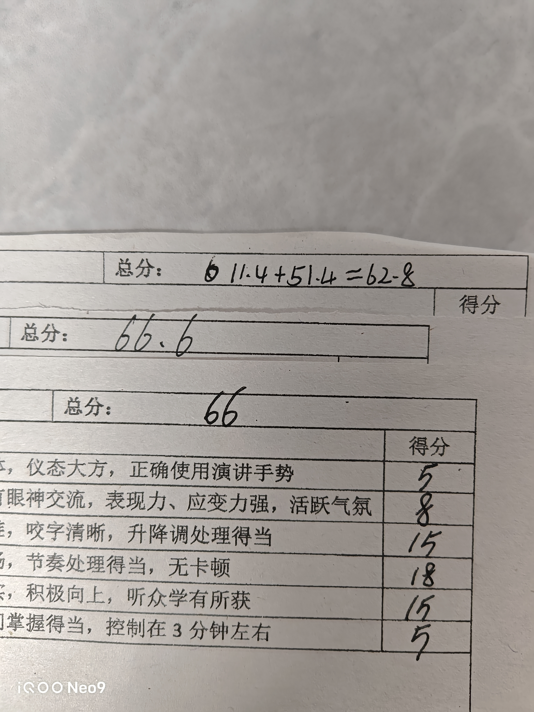
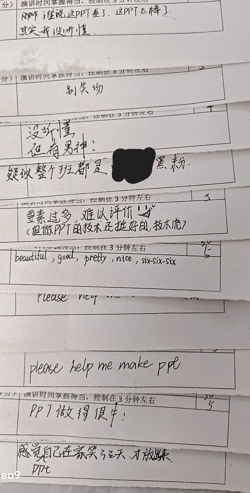
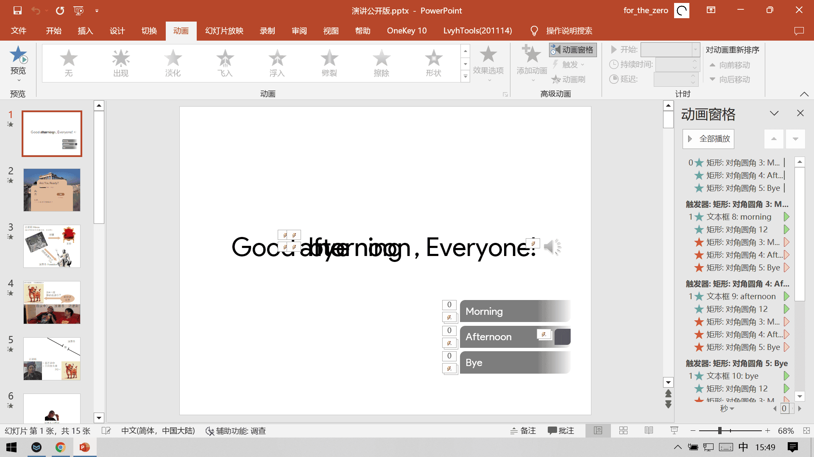
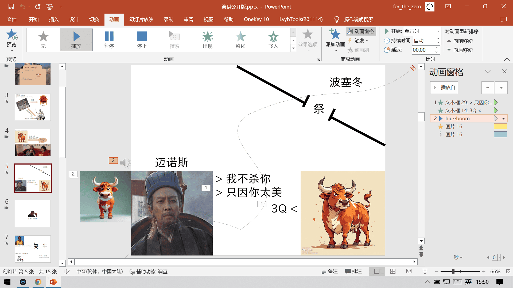
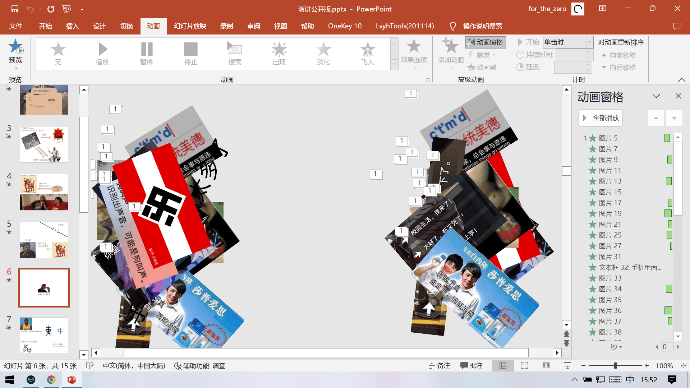
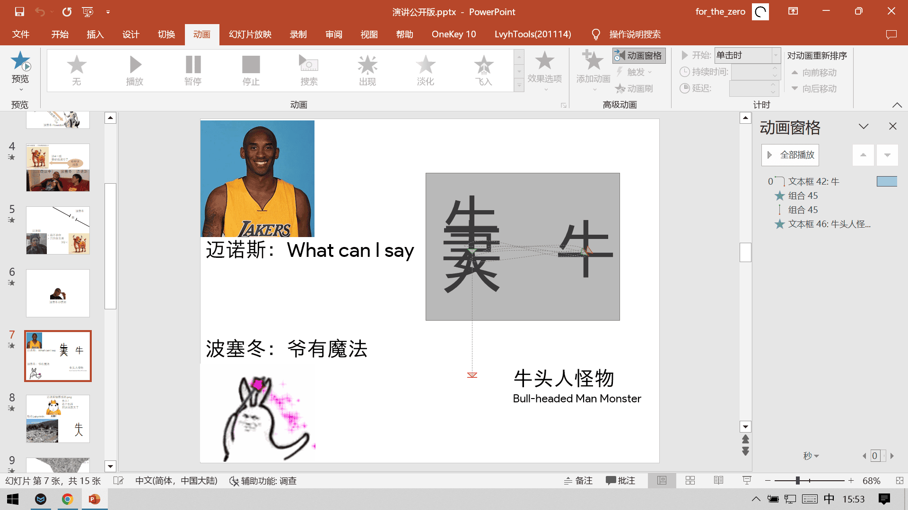
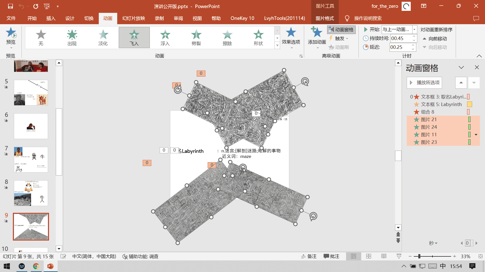
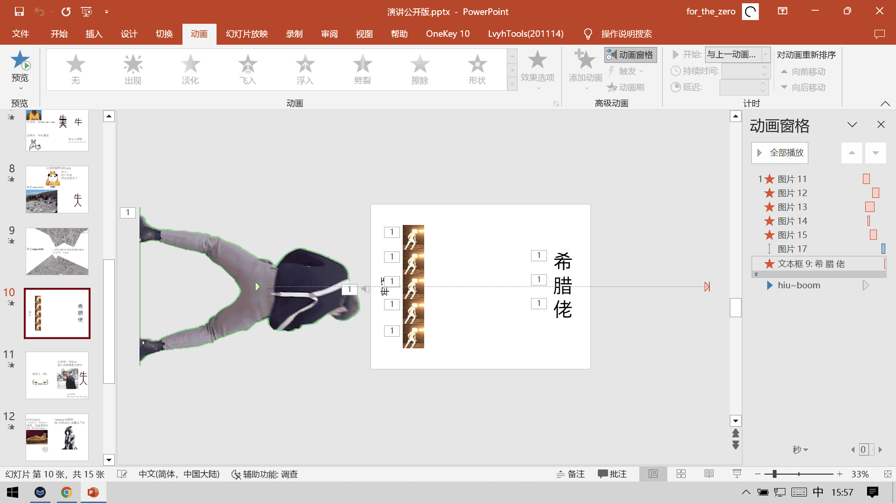
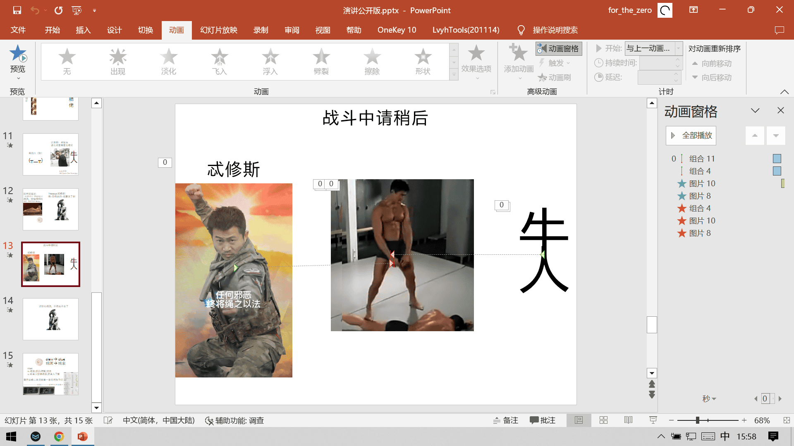

这是我最近为英语演讲写的演讲稿（搞）
评价：


稿子
乱写的，重点在ppt整活
上面给了ppt，这里的<->的意思是按一下ppt（播放动画或翻页）
Good morning, everyone! <-> Today I will introduce an ancient Greek myth, which explores the origins of two fascinating words. <->There was a man who wants to struggle for the throne, he's called <-> Minos, he asked a god, <-> Poseidon to help him, <-> but upon his success, Minos must sacrifice <-> a bull which Poseidon have given. <->However, Minos was not willing to kill it <-> because of its beauty, so he sacrificed another bull. <-> This made Poseidon <-> really angry, <-> he used magic to make the queen fall in love with the bull, resulting in the birth of a bull-headed man monster. <->To hide his shame, Minos made someone build a building called labyrinth <-> to imprison it. It's too complex that the builder almost couldn't get out. <-> So, this is how the word "labyrinth" came, it means a maze! <-> <->After Minos defeated the Athenians <-> ，he forced them to send seven pairs of boys and girls a year to feed the monster. <-> A hero called Theseusvolunteered to kill the monster. <-> His lover gave him a ball of string, known in ancient English as a "clew". <-> After he killing it, <-> he used the strings found a way out. <->Over time, the word "clew" evolved from "a ball of string" to "clue", <-> which is a word we recently learned.My speech is over, thanks. <->
我在PPT干了什么

反手就是可交互，按按钮切换文本，做起来有点复杂

《只因你太美》（确实是字面上的意思）
还有个“专业配音师”，该大家来个措手不及

一堆成分复杂的东西升上来，可以自己下载ppt看

“牛”干“妻”生“牛人”的动画，十分生草，十分逆天

这四张迷宫图片是从两张迷宫图片里面裁出来的（一张变两张）
可以去 https://for-the-zero.github.io/MyDrive/ 找到，走法翻一下前面的博客《一种迷宫的介绍》

Sakuzyo+篮球+坤坤+神似PVZ，嗯……

两张哲♂学图片，懂得都懂